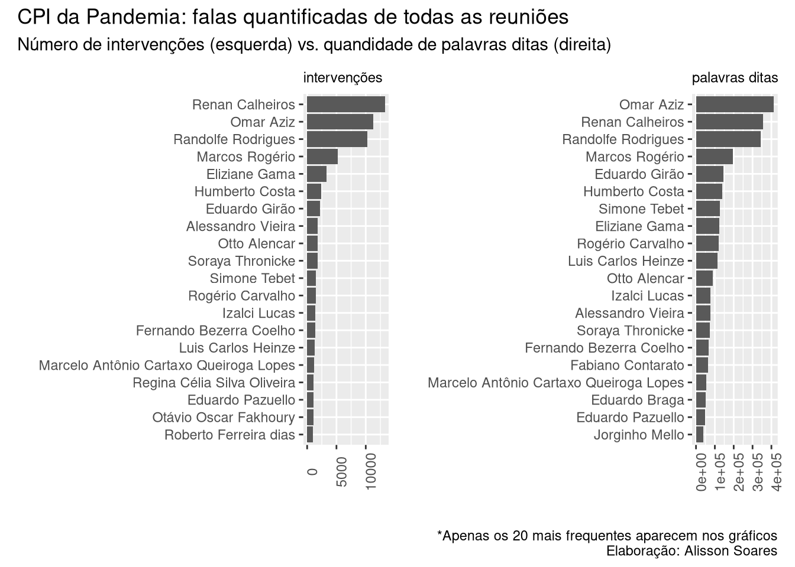

15 Palavras chave em contexto - KWIC
Para entender melhor como certas palavras foram utilizadas, em que contexto elas apareceram, podemos utilizar o Keywords in context
# Carregando o pacote
library(quanteda)
# Transformando o dataframe em corpus do quanteda
Corpus.NT.falas.agrupadas <- corpus(NotasTaq_falas.agrupadas,
docnames = "nome",
# docid_field = 1:nrow(NotasTaq_falas.agrupadas),
docid_field = "nome",
text_field = "falas" )
## Warning: docnames argument is not used.
# observando nosso corpus
print(Corpus.NT.falas.agrupadas)
## Corpus consisting of 153 documents.
## Airton Antonio Soligo :
## "senhor Presidente, acredito que, em função da decisão, eu nã..."
##
## Alan Diniz Moreira Guedes de Ornelas :
## "Presidente, só uma questão de ordem então? Para deixar o re..."
##
## Alberto Zacharias Toron :
## "Perfeitamente, Excelência, senhor Presidente em exercício. ..."
##
## Alessandro Vieira :
## "Pela ordem, Presidente Otto Alencar. senhor Presidente... ..."
##
## Alexandre Figueiredo Costa Silva Marques :
## "Senador, eu vou me valer do habeas corpus que me foi deferid..."
##
## Alexandre Queiroz :
## "Presidente, bom dia. Bom dia, eminente Relator, senhors. Se..."
##
## [ reached max_ndoc ... 147 more documents ]
summary(Corpus.NT.falas.agrupadas, 5)
## Corpus consisting of 153 documents, showing 5 documents:
##
## Text Types Tokens Sentences
## Airton Antonio Soligo 2706 19501 1367
## Alan Diniz Moreira Guedes de Ornelas 238 632 60
## Alberto Zacharias Toron 233 632 55
## Alessandro Vieira 6974 73620 3955
## Alexandre Figueiredo Costa Silva Marques 1323 7169 459
# tokenizando para poder usar no kwic
corpus.token <- Corpus.NT.falas.agrupadas |>
# precisamos primeiro tokenizar
tokens()
# termos a serem buscados
termos.vetor <- c("WhatsApps", "Quickcard")
# rodando a função de palavras chave em contexto
kwic(corpus.token ,
# termos a serem buscados. Pode ser um termo ou um vetor
termos.vetor,
# quantas palavras devem ser mostradas ao redor
4,
# Para pegar tanto palavras minúsculas como as em maiúsculo.
case_insensitive = TRUE)
## Keyword-in-context with 10 matches.
## [Humberto Costa, 18096] já recebi hoje alguns | WhatsApps |
## [Humberto Costa, 36774] , vários telefonemas e | WhatsApps |
## [Jean Paul Prates, 12712] conhece um serviço chamado | QuickCard |
## [Jean Paul Prates, 12714] serviço chamado QuickCard? | QuickCard |
## [Jean Paul Prates, 12727] . Você emite um | QuickCard |
## [Jean Paul Prates, 12760] para esse serviço chamado | QuickCard |
## [Jean Paul Prates, 12997] é o pagamento à | QuickCard |
## [Jean Paul Prates, 13014] adiante: a quem | QuickCard |
## [Randolfe Rodrigues, 210924] Abdul, vamos aos | WhatsApps |
## [Randolfe Rodrigues, 211078] Pode continuar com os | WhatsApps |
##
## e tal. O
## de assessores do ministério
## ? QuickCard é uma
## é uma espécie de
## para alguém e essa
## . O senhor tem
## . O que a
## pagou, ou quem
## . O senhor Abdul
## . Pode continuar,Vamos colocar os gráficos lado a lado para facilitar a comparação. Para tal, vamos utilizar o pacote patchwork que torna bem fácil colocar múltiplos gráficos juntos, nas mais diferentes configurações de layout. Para usá-lo, vamos primeiro salvar os gráficos como objetos R e depois vamos organizá-los no patchwork. Os gráficos são os mesmos que usamos mais acima.
Para instalar, podemos usar o comando install.packages('patchwork').
# carregando o pacote
library(patchwork)# Número de corte do máximo de itens a aparecer no gráfico
n <- 20
graf1 <- dplyr::arrange(intervencoes, desc(freq)) %>%
# restringindo aos 30 mais frequentes
head(n) %>%
ggplot( aes(x = reorder(nome, freq), y = freq)) +
geom_col() +
labs(title = "intervenções", x = "",y = "") +
theme(axis.text.x = element_text(angle = 90),
# diminuindo a letra do título do gráfico
plot.title = element_text(size=9)) +
# girando o gráfico
coord_flip()
graf2 <- NT_falasJuntasCount %>%
# restringindo aos primeiros resultados
head(n) %>%
ggplot( aes(x = reorder(nome, N_palavras), y = N_palavras)) +
geom_col() +
labs(title = "palavras ditas", x = "",y = "") +
theme(axis.text.x = element_text(angle = 90),
# diminuindo o tamanho do título do gráfico
plot.title = element_text(size=9)) +
# girando o gráfico
coord_flip()
# usando o patchwork pra colocar os gráficos lado a lado
graf1 + graf2 +
# adicionando titulo ao gráfico
plot_annotation(title = 'CPI da Pandemia: falas quantificadas de todas as reuniões',
subtitle = "Número de intervenções (esquerda) vs. quandidade de palavras ditas (direita)",
caption = '*Apenas os 20 mais frequentes aparecem nos gráficos\nElaboração: Alisson Soares')
Vamos restringir inicialmente nossa base de dados para explorar melhor. Vamos começar somente com os senadores.
15.1 Opção 1: pegando apenas os senadores
Como somente os senadores que participaram possuem campo com partido e bloco parlamentar preenchido, uma opção para filtrarmos apenas os senadores seria excluindo as linhas cuja célula da coluna “BlocoParl” esteja vazia. <<
- O campo “funcao_blocoPar” possui, além da função e bloco parlamentar, possui também questões de ordem
- O campo “part” melhora a situação, mas podendo haver parlamentar sem partido, não resolve nosso problema
- o campo estado pode resolver nosso problema.
siglas <- c("AC", "AL", "AP", "AM", "BA", "CE", "DF", "ES", "GO", "MA", "MT", "MS", "MG", "PA", "PB", "PR", "PE", "PI", "RJ", "RN", "RS", "RO", "RR", "SC", "SP", "SE", "TO")
DFsenadores <- NotasTaq %>%
#filter(siglas %in% estado)
filter(estado %in% siglas)
DFsenadores
## # A tibble: 67,220 × 9
## reuniao data nome funcao_blocoPar BlocoParl partido estado complemento
## <dbl> <date> <chr> <chr> <chr> <chr> <chr> <chr>
## 1 1 2021-04-27 Otto… PRESIDENTE (Otto Al… PSD BA "Fala da P…
## 2 1 2021-04-27 Ciro… (Bloco Parlame… Bloco Pa… PP PI "Para ques…
## 3 1 2021-04-27 Otto… PRESIDENTE (Otto Al… PSD BA ""
## 4 1 2021-04-27 Ciro… (Bloco Parlame… Bloco Pa… PP PI ""
## 5 1 2021-04-27 Otto… PRESIDENTE (Otto Al… PSD BA ""
## 6 1 2021-04-27 Ciro… (Bloco Parlame… Bloco Pa… PP PI ""
## 7 1 2021-04-27 Otto… PRESIDENTE (Otto Al… PSD BA ""
## 8 1 2021-04-27 Ciro… (Bloco Parlame… Bloco Pa… PP PI ""
## 9 1 2021-04-27 Otto… PRESIDENTE (Otto Al… PSD BA ""
## 10 1 2021-04-27 Ciro… (Bloco Parlame… Bloco Pa… PP PI ""
## # … with 67,210 more rows, and 1 more variable: fala <chr>
unique(DFsenadores$nome)
## [1] "Otto Alencar" "Ciro Nogueira"
## [3] "Jorginho Mello" "Izalci Lucas"
## [5] "Alessandro Vieira" "Eduardo Braga"
## [7] "Eduardo Girão" "Marcos Rogério"
## [9] "Omar Aziz" "Humberto Costa"
## [11] "Rogério Carvalho" "Weverton"
## [13] "Eliziane Gama" "Randolfe Rodrigues"
## [15] "Paulo Rocha" "Flávio Bolsonaro"
## [17] "Renan Calheiros" "Fernando Bezerra Coelho"
## [19] "Luis Carlos Heinze" "Angelo Coronel"
## [21] "Marcos do Val" "Simone Tebet"
## [23] "Leila Barros" "Tasso Jereissati"
## [25] "Zenaide Maia" "Fabiano Contarato"
## [27] "Vanderlan Cardoso" "Telmário Mota"
## [29] "Soraya Thronicke" "Jean Paul Prates"
## [31] "Mara Gabrilli" "Reguffe"
## [33] "Mecias de Jesus" "Roberto Rocha"
## [35] "Kátia Abreu" "Daniella Ribeiro"
## [37] "Jorge Kajuru" "Carlos Portinho"
## [39] "Styvenson Valentim" "Nelsinho Trad"
## [41] "Giordano" "Osmar Terra"
## [43] "Luis Miranda" "Rodrigo Cunha"
## [45] "Eliane Nogueira" "Reinhold Stephanes Junior"
## [47] "Ricardo Barros" "Rose de Freitas"
## [49] "Daniel Freitas" "Bia Kicis"No entanto, esta opção captou também os deputados que lá falaram, como Luis Miranda e Bia Kicis.
15.2 Opção 2: Somente senadores, a partir do site do Senado
Vamos pegar os nomes dos senadores no site do senado
library(rvest)
pagina_senadores <- rvest::read_html(url("https://www25.senado.leg.br/web/senadores/em-exercicio/"))
senadores <- pagina_senadores %>%
html_elements("#senadoresemexercicio-tabela-senadores a") %>%
html_text()
#html_attr("name")
head(senadores, 20)
## [1] "" "Mailza Gomes" "Marcio Bittar"
## [4] "Sérgio Petecão" "" "Fernando Collor"
## [7] "Renan Calheiros" "Rodrigo Cunha" ""
## [10] "Eduardo Braga" "Omar Aziz" "Plínio Valério"
## [13] "" "Davi Alcolumbre" "Lucas Barreto"
## [16] "Randolfe Rodrigues" "" "Angelo Coronel"
## [19] "Jaques Wagner" "Otto Alencar"
# Vimos que há muitos elementos vazios no vetor. Vamos retirá-los com o comando:
senadores <- senadores[senadores!= ""]
senadores
## [1] "Mailza Gomes" "Marcio Bittar"
## [3] "Sérgio Petecão" "Fernando Collor"
## [5] "Renan Calheiros" "Rodrigo Cunha"
## [7] "Eduardo Braga" "Omar Aziz"
## [9] "Plínio Valério" "Davi Alcolumbre"
## [11] "Lucas Barreto" "Randolfe Rodrigues"
## [13] "Angelo Coronel" "Jaques Wagner"
## [15] "Otto Alencar" "Cid Gomes"
## [17] "Eduardo Girão" "Tasso Jereissati"
## [19] "Izalci Lucas" "Leila Barros"
## [21] "Reguffe" "Fabiano Contarato"
## [23] "Marcos do Val" "Rose de Freitas"
## [25] "Jorge Kajuru" "Luiz Carlos do Carmo"
## [27] "Vanderlan Cardoso" "Eliziane Gama"
## [29] "Roberto Rocha" "Weverton"
## [31] "Alexandre Silveira" "Carlos Viana"
## [33] "Rodrigo Pacheco" "Nelsinho Trad"
## [35] "Simone Tebet" "Soraya Thronicke"
## [37] "Carlos Fávaro" "Fabio Garcia"
## [39] "Wellington Fagundes" "Jader Barbalho"
## [41] "Paulo Rocha" "Zequinha Marinho"
## [43] "Daniella Ribeiro" "Nilda Gondim"
## [45] "Veneziano Vital do Rêgo" "Fernando Bezerra Coelho"
## [47] "Humberto Costa" "Jarbas Vasconcelos"
## [49] "Eliane Nogueira" "Elmano Férrer"
## [51] "Marcelo Castro" "Alvaro Dias"
## [53] "Flávio Arns" "Oriovisto Guimarães"
## [55] "Carlos Portinho" "Flávio Bolsonaro"
## [57] "Romário" "Jean Paul Prates"
## [59] "Styvenson Valentim" "Zenaide Maia"
## [61] "Acir Gurgacz" "Confúcio Moura"
## [63] "Marcos Rogério" "Chico Rodrigues"
## [65] "Mecias de Jesus" "Telmário Mota"
## [67] "Lasier Martins" "Luis Carlos Heinze"
## [69] "Paulo Paim" "Dário Berger"
## [71] "Esperidião Amin" "Jorginho Mello"
## [73] "Alessandro Vieira" "Maria do Carmo Alves"
## [75] "Rogério Carvalho" "Giordano"
## [77] "José Serra" "Mara Gabrilli"
## [79] "Eduardo Gomes" "Irajá"
## [81] "Kátia Abreu"De posse dos nomes dos senadores, vamos ver quais nomes no nosso dataframe da CPI tem intersecção com a lista de senadores. Lembrando, esta lista foi gerada pouco tempo depois da CPI, assim, dependendo de quanto tempo você for tentar reproduzir o exemplo, o link pode ter expirado ou a lista de senadores pode já ter mudado.
Já havíamos gerado um vetor com os nomes de todos que participaram da CPI: “participantes”. Vamos fazer a intersecção dos participantes da CPI com os senadores para pegar apenas os senadores que participaram da CPI.
senadoresNaCPI <- participantes[participantes %in% senadores]
senadoresNaCPI
## [1] "Otto Alencar" "Jorginho Mello"
## [3] "Izalci Lucas" "Alessandro Vieira"
## [5] "Eduardo Braga" "Eduardo Girão"
## [7] "Marcos Rogério" "Omar Aziz"
## [9] "Humberto Costa" "Rogério Carvalho"
## [11] "Weverton" "Eliziane Gama"
## [13] "Randolfe Rodrigues" "Paulo Rocha"
## [15] "Flávio Bolsonaro" "Renan Calheiros"
## [17] "Fernando Bezerra Coelho" "Luis Carlos Heinze"
## [19] "Angelo Coronel" "Marcos do Val"
## [21] "Simone Tebet" "Leila Barros"
## [23] "Tasso Jereissati" "Zenaide Maia"
## [25] "Fabiano Contarato" "Vanderlan Cardoso"
## [27] "Telmário Mota" "Soraya Thronicke"
## [29] "Jean Paul Prates" "Mara Gabrilli"
## [31] "Reguffe" "Mecias de Jesus"
## [33] "Roberto Rocha" "Kátia Abreu"
## [35] "Daniella Ribeiro" "Jorge Kajuru"
## [37] "Carlos Portinho" "Styvenson Valentim"
## [39] "Nelsinho Trad" "Giordano"
## [41] "Rodrigo Cunha" "Eliane Nogueira"
## [43] "Rose de Freitas"Tendo agora a lista dos senadores que participaram da CPI, vamos filtrar as falas somente destes.
senadoresdf <- NotasTaq %>%
filter(nome %in% senadoresNaCPI )
str(senadoresdf)
## tibble [65,733 × 9] (S3: tbl_df/tbl/data.frame)
## $ reuniao : num [1:65733] 1 1 1 1 1 1 1 1 1 1 ...
## $ data : Date[1:65733], format: "2021-04-27" "2021-04-27" ...
## $ nome : chr [1:65733] "Otto Alencar" "Otto Alencar" "Otto Alencar" "Otto Alencar" ...
## $ funcao_blocoPar: chr [1:65733] "PRESIDENTE" "PRESIDENTE" "PRESIDENTE" "PRESIDENTE" ...
## $ BlocoParl : chr [1:65733] "(Otto Alencar. PSD - BA. Fala da Presidência.)" "(Otto Alencar. PSD - BA)" "(Otto Alencar. PSD - BA)" "(Otto Alencar. PSD - BA)" ...
## $ partido : Named chr [1:65733] "PSD" "PSD" "PSD" "PSD" ...
## ..- attr(*, "names")= chr [1:65733] "PSD" "PSD" "PSD" "PSD" ...
## $ estado : chr [1:65733] "BA" "BA" "BA" "BA" ...
## $ complemento : chr [1:65733] "Fala da Presidência" "" "" "" ...
## $ fala : chr [1:65733] "Invocando a proteção de Deus, declaro aberta a sessão para eleição, já que temos quórum suficiente para a abert"| __truncated__ "Senador Ciro Nogueira, esta é uma Comissão Parlamentar de Inquérito, vossa_excelência sabe que não é temática. "| __truncated__ "Eu indeferi. Sou Presidente e posso indeferir. " "Por que vossa_excelência não questionou à época essa questão de ordem? " ...
# criando um DF das falas de cada senador todas reunidas
senadores_falasJuntas <- NT_falasJuntasCount %>%
filter(nome %in% senadoresNaCPI )
str(senadores_falasJuntas)
## tibble [43 × 3] (S3: tbl_df/tbl/data.frame)
## $ nome : chr [1:43] "Omar Aziz" "Renan Calheiros" "Randolfe Rodrigues" "Marcos Rogério" ...
## $ N_palavras: int [1:43] 412873 354425 342297 196545 146236 139675 126370 124370 120364 114933 ...
## $ falas : chr [1:43] "Como é que é? Peço só um minutinho, só um minutinho! senhor Presidente... Eu acho que vossa_excelência.. Nós "| __truncated__ "Quer dizer que há outros impedimentos a serem... Acredito não ser o caso de V.Exa., mas o Estado de Alagoas é "| __truncated__ "Presidente... Presidente, qual a ordem? Presidente, só para declinar a ordem, quem são? Agora é a Eliziane? "| __truncated__ "senhor Presidente, senhors. e senhor. Senadores, faço a presente questão de ordem, senhor Presidente, desde log"| __truncated__ ...E outro tibble apenas com quem não for senador
nao_senadores <- NotasTaq %>%
filter(BlocoParl == "")
nao_senadores
## # A tibble: 24,296 × 9
## reuniao data nome funcao_blocoPar BlocoParl partido estado complemento
## <dbl> <date> <chr> <chr> <chr> <chr> <chr> <chr>
## 1 10 2021-05-20 Edua… "" "" "" "" ""
## 2 10 2021-05-20 Edua… "" "" "" "" ""
## 3 10 2021-05-20 Edua… "" "" "" "" ""
## 4 10 2021-05-20 Edua… "" "" "" "" ""
## 5 10 2021-05-20 Edua… "" "" "" "" ""
## 6 10 2021-05-20 Edua… "" "" "" "" ""
## 7 10 2021-05-20 Edua… "" "" "" "" ""
## 8 10 2021-05-20 Edua… "" "" "" "" ""
## 9 10 2021-05-20 Edua… "" "" "" "" ""
## 10 10 2021-05-20 Edua… "" "" "" "" ""
## # … with 24,286 more rows, and 1 more variable: fala <chr>
unique(nao_senadores$nome)
## [1] "Eduardo Pazuello"
## [2] "Mayra Pinheiro"
## [3] "Dimas Tadeu Covas"
## [4] "Nise Hitomi Yamaguchi"
## [5] "Luana Araújo"
## [6] "Marcelo Antônio Cartaxo Queiroga Lopes"
## [7] "Antônio Elcio Franco Filho"
## [8] "Natalia Pasternak"
## [9] "Cláudio Maierovitch"
## [10] "Marcellus José Barroso Campêlo"
## [11] "Marcellus Campelo"
## [12] "Wilson Witzel"
## [13] "Francisco Eduardo Cardoso Alves"
## [14] "Ricardo Ariel Zimerman"
## [15] "Osmar Terra"
## [16] "Jurema Werneck"
## [17] "Pedro Hallal"
## [18] "Luis Ricardo Fernandes Miranda"
## [19] "Fausto Vieira dos Santos Junior"
## [20] "Wagner Lima da Costa"
## [21] "Gina Moraes de Almeida"
## [22] "Carlos Roberto Wizard Martins"
## [23] "Alberto Zacharias Toron"
## [24] "Guilherme Cremonesi Caurin"
## [25] "Luiz Henrique Mandetta"
## [26] "Luiz Paulo Dominguetti Pereira"
## [27] "Flavio Correa de Moraes"
## [28] "Regina Célia Silva Oliveira"
## [29] "Pedro Henrique Medeiros de Araújo"
## [30] "Roberto Ferreira dias"
## [31] "Maria Jamile José"
## [32] "Francieli Fontana Sutile Tardetti Fantinato"
## [33] "Francieli Fontana Sutile Fantinato"
## [34] "Thiago Leônidas"
## [35] "William Amorim Santana"
## [36] "Emanuela Batista de Souza Medrades"
## [37] "Ticiano Figueiredo de Oliveira"
## [38] "Pedro Ivo Velloso"
## [39] "Cristiano Alberto Hossri Carvalho"
## [40] "Fábio Henrique Ming Martini"
## [41] "Amilton Gomes de Paula"
## [42] "Otávio de Queiroga"
## [43] "Marcelo Blanco da Costa"
## [44] "Marcelo Blanco"
## [45] "Eric Furtado Ferreira Borges"
## [46] "Nelson Luiz Sperle Teich"
## [47] "Airton Antonio Soligo"
## [48] "Emerson Paxá Pinto Oliveira"
## [49] "Helcio Bruno de Almeida"
## [50] "João Carlos Gonçalves Krakauer Maia"
## [51] "Jailton Batista"
## [52] "Ricardo Barros"
## [53] "Alexandre Figueiredo Costa Silva Marques"
## [54] "Eduardo de Vilhena Toledo"
## [55] "Túlio Silveira"
## [56] "Francisco Emerson Maximiano"
## [57] "Ticiano Figueiredo"
## [58] "Emanuel Ramalho Catori"
## [59] "Michel Saliba Oliveira"
## [60] "Roberto Pereira Ramos Júnior"
## [61] "Alexandre Queiroz"
## [62] "José Ricardo Santana"
## [63] "Marcelo Queiroga"
## [64] "Alan Diniz Moreira Guedes de Ornelas"
## [65] "Ivanildo Gonçalves da Silva"
## [66] "Francisco Araújo Filho"
## [67] "Cleber Lopes de Oliveira"
## [68] "Marcos Tolentino da Silva"
## [69] "Luciano Duarte Peres"
## [70] "Marconny Nunes Ribeiro Albernaz de Faria"
## [71] "Wagner de Campos Rosário"
## [72] "Pedro Benedito Batista Júnior"
## [73] "Aristides Zacarelli"
## [74] "Maria José Ferreira Pessoa"
## [75] "Vinicius Luiz Ferreira"
## [76] "Danilo Berndt Trento"
## [77] "Bruna Mendes dos Santos Morato"
## [78] "Antonio Barra Torres"
## [79] "Luciano Hang"
## [80] "Beno Brandão"
## [81] "Otávio Oscar Fakhoury"
## [82] "Antonio Manssur"
## [83] "Milena Ramos Câmara"
## [84] "Raimundo Nonato Brasil"
## [85] "Andreia da Silva Lima"
## [86] "Walter José Faiad de Moura"
## [87] "Paulo Roberto Vanderlei Rebello Filho"
## [88] "Walter Correa de Souza Neto"
## [89] "Tadeu Frederico de Andrade"
## [90] "Priscila Pamela Cesario dos Santos"
## [91] "Rosane Maria dos Santos Brandão"
## [92] "Mayra Pires Lima"
## [93] "Antonio Carlos Alves de Sá Costa"
## [94] "Giovanna Gomes Mendes da Silva"
## [95] "Katia Shirlene Castilho dos Santos"
## [96] "Márcio Antonio do Nascimento Silva"
## [97] "Elton da Silva Chaves"
## [98] "Fabio Wajngarten"
## [99] "Carlos Murillo"
## [100] "Ernesto Araújo"